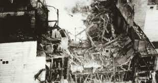
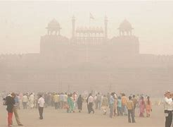

CELE MAI GRAVE CAZURI DE POLUARE.
1. Explozia nucleara de la Cernobil
Aceasta explozie a avut loc in anul 1986, fiind una dintre cele mai mari dezastre ecologice din istorie.
Pana si astazi, nivelul de radiatii din zona orasului este foarte mare.

Centrala atunci cand a explodat.
2.Beijing, China.
De foarte multi ani, Beijing-ul se confrunta cu mari probleme de poluare.
Aceasta cauza se datoreaza cel mai probabil din cauza conbustibilului folosit in fabrici.
